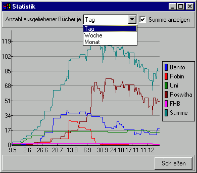

Statistik
Über das Menü "Extras\Statistik" kann man die Statistik öffnen, die anzeigt wieviele Medien in einer bestimmten Zeitspanne ausgeliehen waren. Dies sieht ungefähr so aus:
In der Leiste über dem Diagramm kann man einstellen, ob es sich bei dieser Zeitspanne um einen Tag, eine Woche oder einen Monat handeln soll.
Desweiteren kann man festlegen, ob die Gesamtzahl der Bücher, oder nur die Anzahl pro Konto angezeigt werden soll.
Welcher Graph zu welchem Konto gehört wird in der Legende am rechten Rand angezeigt.
Die Bücheranzahl ist auf der Ordinate (y-Achse) aufgetragen, das Datum auf der Abszisse (x-Achse).
Das Datum wird abhängig vom ausgewählten Zeitinterval in unterschiedlichen Formaten angezeigt:
| "Tag" | "Monat.Tag" (also ohne Jahr) Da es soviele Tage gibt |
| "Woche" | Wochennummer im Jahr (1 bis 52) |
| "Monat" | Monatsnummer im Jahr (1 bis 12) |
Bei den Einstellungen "Woche" und "Monat" wird zwischen den einzelnen Anzahlen linear interpoliert. Die bei einem Monat angezeigte Anzahl ist die Summe aller Bücher die während dem ersten und letzten Tag dieses Monats ausgeliehen waren.
Das Diagramm beginnt mit dem ältesten bekannten Zeitpunkt an dem mindestens ein Buch ausgeliehen war, also dem Ausleihdatum, des beim ersten Start von Videlibri am längsten ausgeliehenen Mediums.
Videlibri kann aber nicht herausfinden, welche Medien zwischen diesem Ausleihdatum und dem ersten Ausführungsdatum ausgeliehen worden, aber mittlerweile wieder abgegeben sind.
Daher ist die im Diagramm angezeigte Anzahl der Medien in diesem Interval zu niedrig.
Außerdem kann Videlibri keine Medien anzeigen, die in einer Zeitspanne ausgeliehen und zurückgegeben worden sind, in der Videlibri nicht gestartet worden ist.
Und Videlibri weiß nicht, wann genau ein Medium zurückgegeben worden ist, es weiß kennt nur einen frühest- (nach der letzten Aktualisierung bei der das Buch ausgeliehen war) und einen spätestmöglichen (vor der Aktualisierung bei der das Buch nicht mehr ausgeliehen war) Zeitpunkt.
Je häufiger das Programm gestartet wird (oder bei aktivem Autostart auf Internet zugegriffen wird) und je geringer die eingestellte Aktualisierungsdauer ist (die Standardeinstellung ist 3 Tage), desto präziser sind die angezeigten Daten.
Außerdem nehmen die Abweichnung ab, wenn nur weniger Bücher auf einmal abgegeben oder ausgeliehen sind, aber viele ausgeliehen sind. (dann muss man auch weniger Bücher bei einem Büchereibesuch tragen).